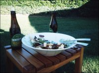
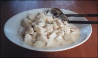

Summertime
Every year, as the days get longer and warmer, my appetite changes from desiring warm comforting stews and roasts to lighter meals that are easy, yummy and often cold. It’s in summer that we congregate around the barbeque – the men with beer in hand squinting against the smoke and the women fluttering about trying to slap together something to go with the sausages and tomato sauce.
The backyard barbeque is something of a Kiwi tradition, and in keeping with our theme of Home, I thought I’d share some ideas and a few of my summer favourites to accompany your backyard barbeques this summer.
Think outside the sausage square
- Barbeque steaks to make steak burgers.
- Raw strips of meat and chopped vegies make a wonderful help-yourself stir-fry buffet where everyone can choose what they eat and how they cook it. Add a sweet-sour sauce, soy sauce and rice, and you have a great meal.
- Chicken barbeques well and tastes wonderful, especially with a honey-soy marinade. Be sure to cook it right to the bone – a bit of charring only adds to the taste!
- Fish is also great barbequed, as are pork belly strips.
- Let your imagination lead you. That Tui ad’s got the right idea – you can cook most things on the barbie.
Some tips and quick salads
In New Zealand, we have heaps of little fruit and vegie shops on the outskirts of town and in the country-side. When you pass them, make a point of stopping and getting some fresh produce. With these people you know that the produce hasn’t been in some cool store for the last six months. Sometimes you can even pick your own. Support these little shops if you haven’t in the past, and you’ll wonder why you never had. In the meantime, some general salad ideas:
- Meaty salads – add meat to your green salad: tuna, for example, or cold meats left over from Christmas dinner or last night’s barbeque. It’s great for a light lunch.
- Green salads – most supermarkets now sell mixed salad leaves. They are a quick and fancy alternative to cutting up a head of lettuce. Add some red onion, tomato and any other vegies that you like. Olives and feta cheese add a nice Mediterranean taste. Toss and drizzle with lemon juice, olive oil, or a salad dressing. Croutons are not only for soup – try them in a salad too!
- Coleslaw – once again, you can buy freshly cut coleslaw mixes from your supermarket. Or, even better, make it yourself: just shred some cabbage, grate in a few carrots and toss in a few raisins. Drizzle with a vinaigrette dressing for a refreshing, crunchy coleslaw.
- Mixed bean salad – make a delicious bean salad: a tin of Craig’s Mixed Bean Salad along with a tin of their Four Bean Mix, a tin of sliced peaches (yes, the sweet ones), some chopped up red onion, red capsicum, and a dash of worcestershire sauce. Let it marinate in the fridge overnight – the flavours will be much richer the next day.
- Dessert salads – there are so many desert salads out there, and most of us are only familiar with “fruit salad”. I’ve included two other recipes you will definitely enjoy.
- Remember, it doesn’t have to be green to be a salad!
Creamy molded carrot salad
- 1 tin (410 g) pineapple crush
- 1 packet lemon jelly
- 100 g (125 mL) castor sugar
- 1/4 tsp salt
- 2 cups carrots, grated finely
- 125 mL cream, whipped
Drain pineapple juice and add water to make 250 mL. Heat until boiling and dissolve jelly in it. Let it cool until thick but not set, then beat until creamy, adding sugar little by little.
In another bowl, mix carrots and pineapple. Fold into jelly mix. Beat cream until stiff and add to jelly mixture. Rinse mold with cold water, then fill with the salad. Refrigerate until set.
Mum’s potato salad
- 5 large potatoes
- 1 boiled egg, chopped
- 1/4 red onion, chopped
- 75 mL mayonnaise
- 75 mL condensed milk
Boil potatoes with skin on, cool, then peel. Cut in desired size squares and place in salad dish. Mix other ingredients, then pour over potatoes and mix gently.
Warm chicken-and-walnut salad
- 2 tsp olive oil
- 400 g chicken breast
- 2 rashers bacon
- 2 medium onions
- 50 g chopped walnuts
- 100 g mixed salad or lettuce
- 1 stick celery, chopped
- 1 tin baby corn
- 100 g camembert (optional)
- 2 tbsp lemon juice
- fresh chives (optional)
Heat oil in wok. Slice chicken and stir-fry until tender. Remove from heat. Add bacon to wok, stir-fry until crisp. Stir-fry onions, add celery, then add chicken and nuts. Stir-fry for 3 minutes.
Place salad leaves in a serving bowl. Top with chicken mix. Slice and sprinkle on camembert. Decorate with baby corn and garnish with chopped chives. Drizzle on lemon juice.
Rainbow jelly fruit salad (dessert)
- 5 packs of different coloured jelly
- fruits to correspond with those colours
- boiling water
- 1 1/2 cups evaporated milk
This recipe is best done in stages. Prepare the first colour (the one you want on top) according to directions on packet. Let it cool. (If you like, you can prepare it with 1 cup boiling water and add 1/2 cup evaporated milk when it has cooled to room temperature. This gives it a creamy texture.) Put some sliced fruit of that colour on bottom of mold, add a little jelly (not too much, otherwise the fruit floats) and refrigerate until set. Add the rest of that colour of jelly and let set.
When the first layer of jelly has mostly set, slice fruit of next colour and leave until first layer has completely set. Add second layer of jelly following directions above. You don’t always have to add the evaporated milk.
Repeat until you have used all the colours, then turn out on a nice platter for a beautiful looking desert.
Ambrosia (dessert)
- 250 ml whipped cream
- 1 litre natural yoghurt
- 1/2 cup slivered almonds
- 1 punnet strawberries, quartered (or any fruit of your choice)
- 3 cups miniature marshmallows
- pinch of cinnamon
- 1 block of chocolate, chopped
In a large bowl, combine whipped cream, nuts, fruit, marshmallows, chocolate and cinnamon. Mix together well and refrigerate for 30 to 45 minutes.